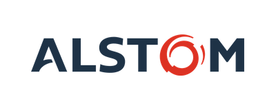
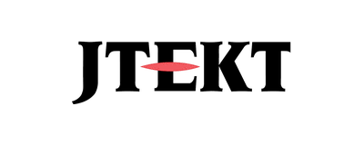
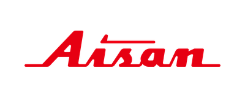
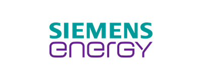
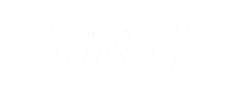

Specializované technické role v úzkém oboru, kde běžné cesty nepřinášejí dost relevantních uchazečů.
Číst příběh →Aktivní kandidáty už jste viděli. My najdeme ty ostatní.
Hledáme lidi, kteří práci mají, sami se nehlásí a na inzerát by pravděpodobně nereagovali. Do 30 dnů vám představíme nejméně dva kandidáty podle zadání, které si společně odsouhlasíme.
Klienti nás neoceňují za množství CV. Oceňují přesnost profilů, použitelné podklady a přehled o tom, co se na trhu skutečně děje.
Přesnost
„Ani jeden kandidát nebyl zcela mimo rozsah.“
ALSTOM
Kontext
„Poznámky ke kandidátům jsme následně využívali na pohovorech.“
Siemens Energy
Mimo trh
„Uchazeči, o kterých jsme si mysleli, že na trhu vůbec neexistují.“
SITEL
Důvěřují nám


Problém
Když inzerce nestačí, další inzerát nepomůže.
Většina klientů se nám ozve ve chvíli, kdy už vyzkoušeli běžné cesty a aktivní kandidáty viděli. My v tu chvíli neotevřeme další inzerát. Ti, které potřebujete, většinou práci mají, sami se nehlásí a běžnou cestou se neukážou. Pro správnou nabídku jsou ale ochotní mluvit.
Nejtěžší nebývá najít ředitele, ti bývají vidět. Nejtěžší je odborník, který má práci, není aktivní v hledání a na běžnou nabídku by pravděpodobně nereagoval. Proto na inzerát nikdy neodpoví.
Jiný druh práce
Běžná agentura pracuje s tím, co přijde. My s tím, co samo nepřijde.
Aktivní část trhu tvoří lidé, kteří právě hledají, reagují na inzeráty nebo jsou otevření nabídkám. My pracujeme i s těmi, kteří práci mají, sami se nehlásí a běžnou cestou se neukážou. Mají profil ne proto, že hledají práci, ale protože svou práci dělají dobře. Za nimi jdeme napřímo.
Zadání do řeči trhu
Většinou víte, koho chcete. Jen je těžší přeložit to do řeči trhu.
Stejnou roli může trh pojmenovávat jinak, než ji máte v hlavě. Stačí jeden špatně napsaný požadavek a kandidát, který umí čtyři z pěti věcí, vám vypadne, místo aby chyběla jen ta pátá. Začínáme tím, že zadání přeložíme tak, aby správní lidé nepropadli sítem.
„Stačil krátký hovor, aby byla pozice řádně popsána. Sintera má schopnost pochopit osobnostní profil kandidáta.“
Sécheron Hasler
Searchová infrastruktura
Nástroj otevře dveře. Zkušenost rozhodne, na které zaklepat.
Máme vlastní searchovou infrastrukturu: nástroje, které si z velké části sami stavíme, vlastní postupy a know-how budované roky. Není to raketová věda. Ale ne každý ji umí postavit a používat den za dnem správně. Stejně jako vy máte výrobní linku na svůj produkt, my máme linku na to, jak najít vašeho člověka.
01
Mapování trhu
Kdo roli reálně umí, i mimo portály a databáze.
02
Přímé oslovení
Konkrétní lidé, napřímo, s nabídkou na míru.
03
Posouzení a kontext
Souvislosti, které vysvětlují, proč má smysl s kandidátem mluvit.
04
Představení
Jen kandidáti, se kterými má smysl mluvit.
Přesnost místo objemu
Nejde o počet CV. Jde o to, kolik z nich stojí za rozhovor.
Neposíláme desítky profilů, aby si firma sama domýšlela, proč je dostala. Kandidáta představujeme s kontextem: proč odpovídá zadání, co u něj dává smysl ověřit a proč má cenu vést rozhovor.
„Představujeme kandidáty s jasným důvodem, proč má smysl s nimi mluvit. Ne profily, u kterých si musíte domýšlet, proč vám přišly.“
„Když je search vedený přesně, firma netřídí hromadu nerelevantních CV. Vede rozhovory s lidmi, kteří dávají smysl.“
„Někdy nejde o to najít víc reakcí. Jde o to najít lidi, kteří se běžně neukážou, protože práci mají.“
„Kandidát nemá být jen někde poblíž zadání. Má mít jasný důvod, proč stojí za rozhovor.“
„Dobrý výstup ze search procesu není jen CV. Je to kontext, který pomáhá firmě rozhodnout se rychleji a věcněji.“
Case studies
Když běžné cesty nestačily
U kvalitářských rolí nedává smysl ztrácet čas tříděním nerelevantních životopisů.
Číst příběh →Náročné a specifické role v úzce regulovaném oboru.
Číst příběh →Náročné mezinárodní role, u kterých dříve vznikaly potíže s obsazením.
Číst příběh →Velmi specifické technické pozice mohou brzdit nejasnosti v zadání.
Číst příběh →Pozice se hledala delší dobu a nedařilo se ji obsadit.
Číst příběh →Reference
Slova klientů říkají víc než naše sliby
„99 % nabídnutých kandidátů míří rovnou na pohovor.“
ZF Passive SafetyManažeři a inženýři kvality
Číst celé →
„Přišli i uchazeči, kteří na trhu působili jako nedostupní.“
SITELTechnik datového centra, technik zásahů, stavbyvedoucí
Číst celé →
„Ani jeden představený kandidát nemířil mimo rozsah hledané role.“
ALSTOMOdborné pozice v nákupu
Číst celé →Windmöller & Hölscher
„Podklady obsahují komentář Sintery i mzdová očekávání kandidáta.“
Windmöller & HölscherManažerské a odborné technické pozice
Číst celé →
„Do dalších kol se často posune několik kandidátů.“
JTEKT Czech RepublicOdborné a technické pozice
Číst celé →„Profily odpovídaly velmi přesně odsouhlasenému zadání.“
Nestlé ČeskoProduktový a procesní specialista, bezpečnostní technik
Číst celé →
„Výběrové řízení skončilo dřív, než se původně čekalo.“
Aisan IndustrySpecialista údržby forem
Číst celé →
„Poznámky ke kandidátům se využily přímo při pohovorech.“
Siemens EnergyTax Specialist
Číst celé →
„Konzultanti se doptávají do detailů skutečného obsahu role.“
TRW CarrInženýři kvality a elektro role
Číst celé →Archiv více než 100 referencí poskytujeme na vyžádání.
Search vede člověk
Search nevede formulář. Vede ho člověk, který rozumí trhu.
Za search odpovídá člověk, který ví, proč vám kandidáta posílá. Nečekáte na anonymní proces. U každého zadání víte, kdo ho vede, proč se hledá právě tímto směrem a co se na trhu děje.
Video se připravuje
Volné pozice
Aktuálně hledáme
Výběr rolí, na kterých právě pracujeme. Ne všechny search projekty zveřejňujeme.
Tomuhle zadání teď nic neodpovídá. Většinu rolí hledáme i mimo tento seznam. Napište nám, koho potřebujete.
Máte pozici, kterou nemůžete obsadit?
Pošlete nám job description, nebo pár vět k roli. Ozveme se a řekneme, jak konkrétně ji uchopíme.